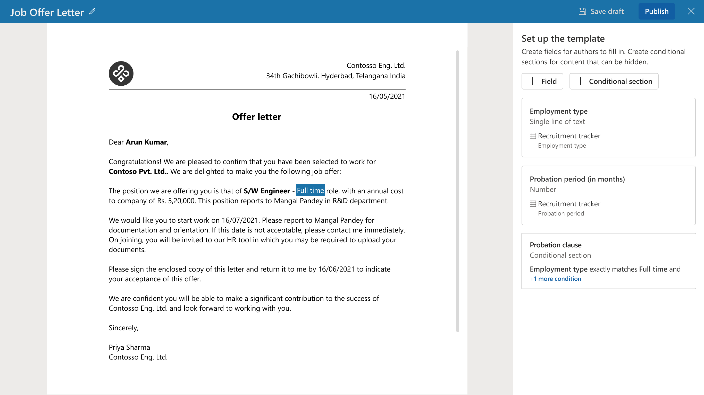
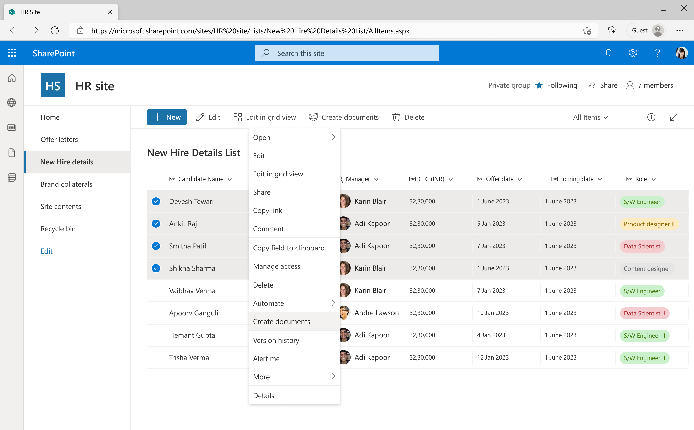
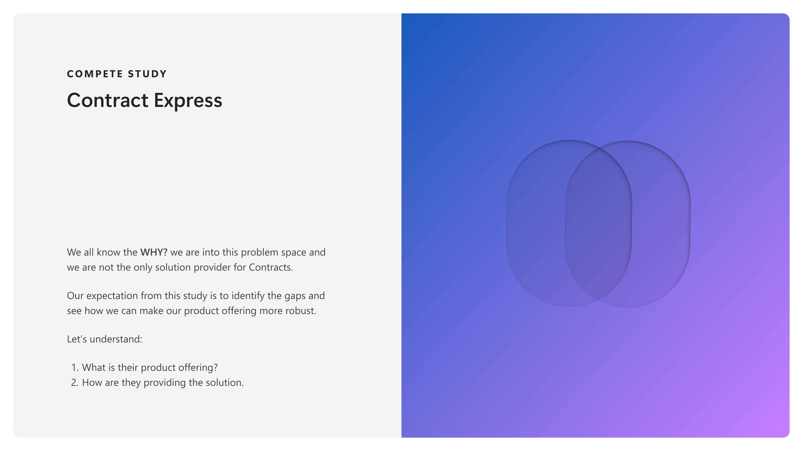
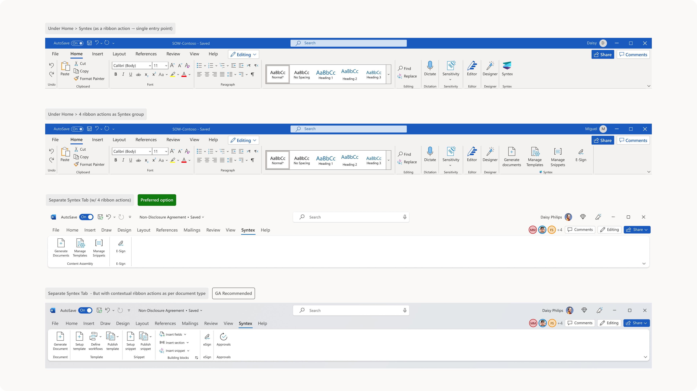
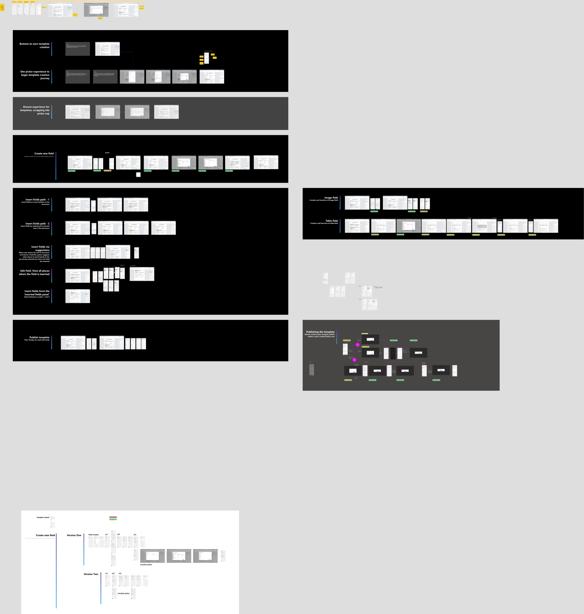
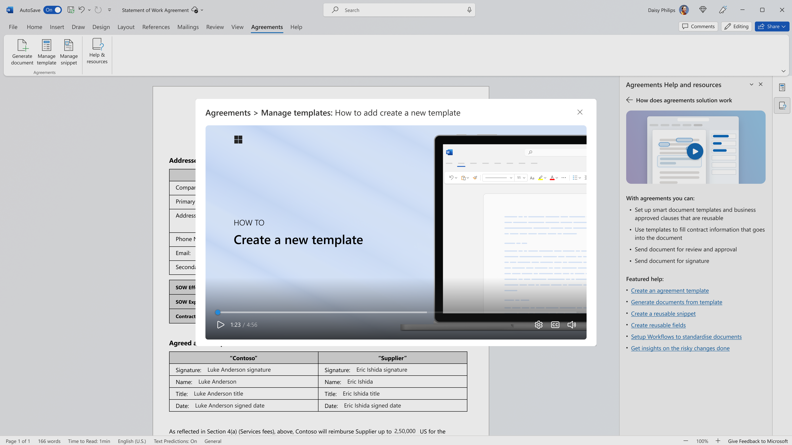
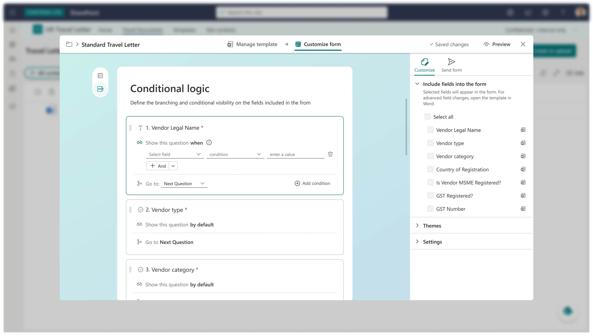
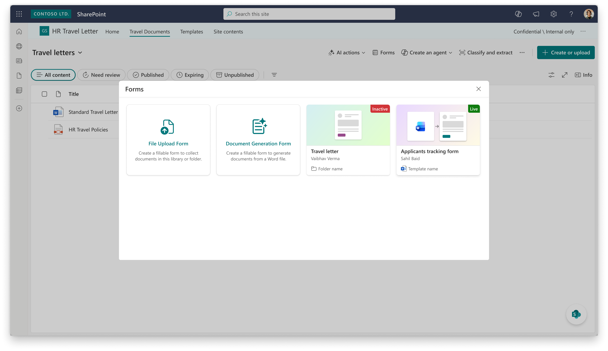

Jan 2022 - Jun 2023
Content Assembly
Era 1 established the 0→1 foundation in template-driven generation, conditional logic, and bulk workflow direction.
From template authoring to AI-powered vertical solutions — a continuous arc of system-level thinking, cross-functional ownership, and measurable execution.
Era 1 established the 0→1 foundation in template-driven generation, conditional logic, and bulk workflow direction.
Era 2 pivoted into Word-native lifecycle design with stronger IA, reusable systems, and cross-team delivery scale.
Era 3 scaled the platform into AI vertical solutions with system behaviors, forms maturity, and strategy-level alignment.
I led end-to-end UX validation for conditional placeholder and field logic, the feature that unlocked dynamic document generation without multiple template variants. I authored UT enquiries and ran prototype walkthroughs directly with users to stress-test field behavior, then translated those insights into the contextual content assembly specification using conditional placeholders (Jul–Sept 2022). This work also fed into CY23 H1 planning, where I contributed to strategy and adoption direction for scaling the capability (Nov 2022).

Deep dive is yet to be added. To be discussed in 1:1 setup.
I co-drove the design and feature direction for bulk document generation, establishing UX patterns that helped non-technical users trigger document production at scale. This included co-driving the Dec 2022 spec design review, contributing to automated generation scope and direction in Nov 2022, and shaping discoverability through an end-to-end list-page workshop in Jan 2023.

Take a deeper diveBefore defining Agreements' direction, I conducted a competitive analysis of Contract Express—a leading legal tech document generation platform. The teardown validated questionnaire-driven workflows and clarified a hard architecture constraint in our existing Content Assembly model: because the experience was invoked from SharePoint and rendered in a webpage iframe with a side panel, true in-canvas editing in that offering was not feasible. This insight drove the pivot to provide template creation and document generation directly in users' Word flow of work, shifting the platform trajectory to Agreements (Word-native).

Take a deeper diveIn this phase, I helped prove demand for dynamic generation, but we also faced compounding delivery constraints: fragmented authoring surfaces, low discoverability, limited lifecycle depth, and unclear monetization communication for customers. These challenges directed the product to pivot into a Word-native, premium contract workflow model.
Users had to jump between Word and web surfaces, templates remained power-user heavy, and discoverability was weak in list and entry-point flows, creating friction for non-technical adoption.
Leadership needed a differentiated SharePoint Premium offering, while monetization work (PAYG and entitlement UX) made packaging clarity central to customer adoption conversations.
M365 and Word were shifting to AI-first authoring; I aligned with the team on a Word-native model because Content Assembly's SharePoint-invoked iframe + side-panel architecture could not provide true in-canvas editing for legal workflows.
Conditional logic, bulk generation, and research evidence proved demand for dynamic workflows, but also exposed lifecycle gaps, driving the move to Agreements in Word where review, amendment, and governance could be productized end-to-end.
In house demo video created with the team on what the Agreements in Word experiences like.
I led the end-to-end information architecture for Agreements inside the Word ribbon, from early concept exploration through cross-team alignment with Word’s design partner team. Across multi-month reviews and workshops (Jan 2024 through Dec 2024), I explored three IA models, organized the core concept review, produced context-setting walkthroughs, co-drove tab icon workshops, and owned content-controls design; this work resolved the Backstage-versus-tab tension by formalizing a dedicated Agreements tab with licensing-driven visibility and consistent behavior across Win32, Web, and Mac.

Deep dive is yet to be added. To be discussed in 1:1 setup.
I established the CA component library foundation and used it to create a consistency layer for the Agreements in Word era, enabling faster and more coherent delivery across designers and squads. In parallel, I independently drove the end-to-end Template Creation user journey through recurring experience reviews, carrying the flow from setup details to advanced capabilities such as conditional sections, richer template metadata, and integrated eSignature workflow paths. This was not a simple migration of Content Assembly UX into Word; it was a capability expansion that modernized authoring for production legal workflows while preserving learnability.
I also ramped up two new designers into high-impact ownership areas: one on Document Generation + Approval workflow and another on Manage Snippets. The operating model was deliberate: reusable component primitives, clear journey architecture, and review rituals that let multiple designers ship with one quality bar.

Take a deeper diveI led proactive design proposals that shaped how Agreements experiences are discovered and how AI capabilities are introduced to users, bringing design upstream into strategy rather than reacting downstream. I authored the Backstage discovery proposal, the Agreements In-app learning videos & help resources. For this I drove partnerships with Word team and did storyboarding with in house Motion designer for learning videos.

Deep dive is yet to be added. To be discussed in 1:1 setup.
In Agreements in Word, I helped establish a strong contract core, but the next challenge was scale: one solution line could not absorb cross-domain demand, AI expectations, and platform reuse goals simultaneously. Those pressures directed us to pivot into SharePoint AI Verticals.
Core contract workflows matured, yet backlog pressure shifted to reusable systems like conditional logic, form intelligence, and orchestration patterns that could serve multiple vertical scenarios beyond Agreements alone.
The next growth step required expanding from a single contract solution into legal, HR, and procurement outcomes, improving TAM and reducing dependency on one workflow category.
Copilot and AI roadmap work reframed the product direction around vertical intelligence, automation, and reusable platform components, with platform-vs-bespoke sequencing becoming a leadership-level decision thread.
Cross-team execution required customer-first validation, reliability, and shared building blocks; this drove the SPAI pivot where DocGen Forms and conditional visibility became foundational capabilities for all vertical solutions.
Since it is a vision demo, I cannot disclose the details due to NDA.
I led end-to-end UX direction for conditional visibility in DocGen Forms, treating it as a platform language rather than a single feature so legal, HR, and procurement scenarios could scale consistently. From Feb through May 2026, I owned rule-builder and show/hide semantics, authored the conditional visibility technical model, led wall reviews and Figma ERs, and contributed to adjacent autofill plus pagination and sectioning behaviors where visibility rules intersected implementation detail.

Take a deeper diveI contributed across the full DocGen Forms maturity arc from Sep 2025 to May 2026, spanning early platform evolution, GA readiness, and V2 alignment. The work included creation flow, navigation, AI field-detection UX, and end-to-end review support through Figma ER walkthroughs, with tracked attribution and a consistent focus on keeping Forms positioned as the foundational layer for AI vertical scenarios across the SPAI surface.

Take a deeper diveI consistently participated in SP AI Leads syncs from Mar through May 2026, contributing to strategic decisions on bespoke-versus-platform sequencing, customer-first validation, and vertical architecture across legal, HR, and procurement. This leadership cadence built on my earlier contributions to AI vertical framing and solutions vocabulary (Jul–Oct 2025) and continued through HR workflow alignment work (Nov 2025–Mar 2026), with sustained cross-functional engagement across meetings, Teams threads, and email channels.

Deep dive is yet to be added. To be discussed in 1:1 setup.